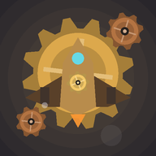

Gear Squadron 개인정보처리방침
1. 수집하는 정보
온라인 시즌 랭킹과(원하는 경우) 구글 계정 연결을 위해 아래 정보만 서버(Google Firebase)에 보냅니다. 이름·전화번호·위치·연락처·사진·광고 ID는 수집하지 않으며, 이메일 주소는 구글 계정을 직접 연결한 경우에만 받습니다.
- 익명 사용자 ID — 처음 실행할 때 Firebase 익명 로그인으로 만들어지는 무작위 ID. 따로 가입하지 않아도 됩니다.
- 구글 계정(선택) — 설정 → 「구글 계정 연결」을 누른 경우에만: 구글 계정의 이메일 주소와 구글 계정 ID. 기기를 바꾸거나 다시 설치해도 같은 계정으로 이어 쓰는 데만 씁니다. 비밀번호는 받지 않습니다(구글 로그인 화면에서 직접 고릅니다).
- 클라우드 저장(구글 계정 연결 시) — 게임 진행(골드·보석·스테이지·연구·스킨·설정·닉네임 등 저장 파일 내용)을 내 계정에만 보이게 서버에 보관합니다.
- 닉네임 — 순위표에 보이는 이름(처음엔 「기어파일럿####」 자동, 랭킹 화면에서 바꿀 수 있음). 같은 이름을 두 사람이 쓰지 않도록 예약해 둡니다.
- 무한 모드 기록 — 점수·웨이브·처치 수·전투 시간·함선 등급·기어 배치·장착 스킨·게임 버전, 그리고 기록 검증용 조작 기록(리플레이: 판의 시드와 손가락 이동 입력).
구글 계정을 연결하지 않으면 게임 진행(골드·보석·스테이지·연구·스킨 등)은 기기 안에만 저장합니다.
2. 이용 목적과 공개 범위
- 시즌 순위표·명예의 전당 표시, 시즌이 끝난 뒤 티어 보상 지급, 부정 기록 차단(서버에서 리플레이를 다시 돌려 같은 점수인지 확인), 그리고 구글 계정을 연결한 경우 계정 유지·진행 복원에만 씁니다.
- 이메일 주소와 클라우드 저장은 다른 사용자에게 보이지 않습니다(설정 화면에는 내 이메일 일부만 가려서 보여 줍니다).
- 다른 사용자에게는 닉네임·점수·웨이브·처치 수·함선 등급, 그리고 시즌 상위 10명의 기어 배치(명예의 전당)가 보입니다.
- 광고·분석·판매·제3자 제공에 쓰지 않습니다. 저장은 Google Firebase(Cloud Firestore 서울, Realtime Database 싱가포르)에 하며 전송은 암호화(HTTPS)됩니다.
3. 보관 기간과 삭제(계정 삭제 방법)
- 검증이 끝난 판의 리플레이는 바로 지웁니다. 시즌 최고 기록·닉네임은 랭킹 운영 동안 보관하고, 명예의 전당에는 시즌 상위 10명의 기록이 남습니다.
- 클라우드 저장·이메일 주소는 계정을 삭제할 때까지 보관합니다. 구글 연결 중 잠깐 쓰는 로그인 확인 정보는 게임이 받는 즉시(늦어도 1시간 안에) 지웁니다.
- 게임 안에서 삭제: 로비 → 설정 → 「계정 삭제」를 누르면 서버의 닉네임·랭킹 기록·결과·보상함·클라우드 저장·구글 계정 연결·사용자 ID를 10분 안에 지웁니다(명예의 전당에 남은 기록은 「삭제된 계정」으로 가립니다). 기기 안의 진행은 남습니다.
- 메일로 삭제 요청: 랭킹 화면 위의 닉네임과 함께 minyouman@gmail.com 으로 보내 주시면 30일 안에 같은 내용을 지웁니다. 앱을 지우면 기기 안의 데이터는 함께 지워지지만 서버 기록은 위 방법으로 지웁니다.
4. 권한·광고·결제
- 인터넷 권한만 씁니다(순위표·구글 계정 연결·클라우드 저장). 위치·연락처·사진·카메라·마이크 권한은 쓰지 않습니다.
- 광고 없음. 격납고 스킨 구매는 지금 시험 모드(실제 결제 없음)이며, 실제 결제를 붙일 땐 이 문서를 먼저 고칩니다.
5. 문의
menewsoft · minyouman@gmail.com
English
Gear Squadron sends only the following to Google Firebase: a random anonymous user ID (Firebase anonymous sign-in), your nickname, and endless-mode records (score, wave, kills, time, ship grade, gear layout, equipped skin, game version, and a replay — the run seed and touch inputs — used to verify the score). From 0.11.0 you may optionally link a Google account (Settings → "Link Google account"): we then receive your Google account email address and Google account ID, and keep a cloud save of your game progress that only you can read, so you can continue on another device. No passwords, phone, location, contacts, photos or advertising ID. Without linking, other progress stays on your device. Data is used only to show leaderboards and the hall of fame, give season rewards, block cheating, and (if linked) keep your account and restore progress; it is not used for ads or analytics and is not sold or shared. Others can see your nickname, score, wave, kills and ship grade (and the gear layout of a season's top 10) — never your email or cloud save. Replays are deleted right after verification. Delete in the app: Lobby → Settings → "Delete account" removes your nickname, records, results, reward inbox, cloud save, Google link and user ID from the server within 10 minutes (hall-of-fame entries are shown as "deleted account"). You can also email minyouman@gmail.com with your nickname; we delete it within 30 days. The app uses only the internet permission. No ads; skin purchases are currently in test mode (no real payment).